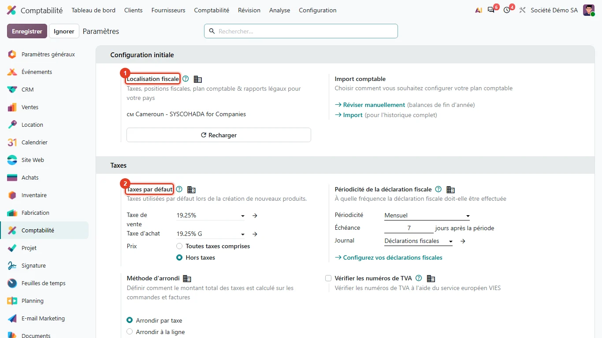

Activer les modules et régler les paramètres de la société
Objectif. Régler une fois pour toutes la devise, l'exercice, les taxes par défaut et les options.
Menu Odoo 15Comptabilité > Configuration > Paramètres
Étapes
- Vérifiez la localisation fiscale (1) : plan SYSCOHADA et devise XAF.
- Réglez les taxes par défaut (2) des ventes et des achats.
- Vérifiez l'exercice fiscal et la périodicité de la déclaration de TVA.
- Activez seulement les options utilisées (immobilisations, relances, import de relevés), puis Enregistrer.

À vérifier
- Société, devise et plan comptable corrects sur les factures.
À éviter
- Ne changez pas la devise ou le plan comptable une fois des écritures saisies.
Exercice
Relevez les paramètres actuels et comparez-les aux choix de la société.